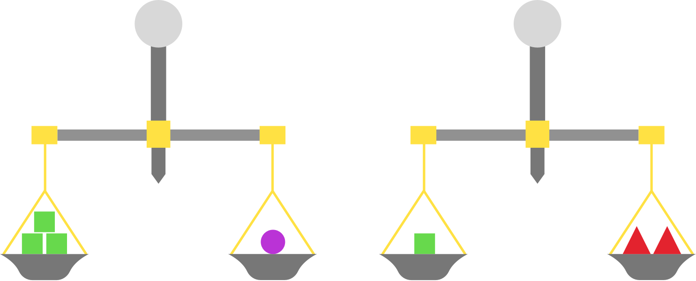

Order of Operations and solving Equations using the Balance Method
PEMDAS
To begin with, we want to know what the order of operations is. Order of operations, also known as PEMDAS, is just a list telling you how to solve a problem while taking the right steps. PEMDAS stands for Parenthesis, Exponents, Multiplication, Divition, Addition, and Substraction. One easy way to remember this acronym is by remembering the sentence "Please Excuse My Dear Aunt Sally."

For example, lets say you want to solve 5+(4 x 5 - 1). Following PEMDAS you want to first look for parenthesis, which you do have, so you want to solve whatever is inside first. Inside you have (4 x 5 - 1), so now you go through PEMDAS again. Is there any exponents? No. Is there multiplication? Yes, so you want to multiply 4 x 5 first, which simplifies to 5+(20-1).You still need to finish with the parenthesis, so you keep going through PEMDAS. Is there divition? No. Is there addition? No. Is there substraction? Yes, so you want to substract 20-1, which gives you 5+(19). Now you have finished with your parenthesis, so you can get rid of them and re-write the problem as 5+19, which will equal 24.
Balance Method
Once you have mastered PEMDAS you can use its opposite to solve equations. To solve an equation you want to use the balance method. For example, if you have a balance that is leveled, so both sides are equal, and you change one side the balance will not be in balance anymore. To solve this you need to make the same change to both sides, and that is exactly what you do when solving an equation for a variable.
The balance method and PEMDAS are used to solve algebraic equations for a variable. Lets take the example 2x-1=5, and they ask you to solve for x. To start with you need to use the opposite of PEMDAS, which only means you first substract, then add, then divide, then multiplication, then exponents, and finally parenthesis, or SADMEP. Taking that into account, you first look in the side of the equation that has the variable, which would be 2x-1. You follow SADMEP and begin by looking for substraction, which you do have. To get rid of that -1 you need to do the oppositem, which is addition. So, by using the balance method if you add one to the left you need to add one to the right. So you would write the equation as 2x-1+1 = 5+1, which reduces to 2x=6. Now again you go through SADMEP from left to right. Is there addition? No. Is there Divition? No. Is there multiplication? Yes, you have 2 times x. Again, the opposite of multiplication is divition, so you need to divide by 2 in both sides. You get 2x/2 = 6/2, which will give you the final answer of x=3.
Note: If you have the equation 3x=2x+4 you want to have the variable in the same side of the equation. Lets choose the left side for x, so using SADMEP we substract 2x from both sides to get 3x-2x=2x-2x+4, which simplifies to x=4.